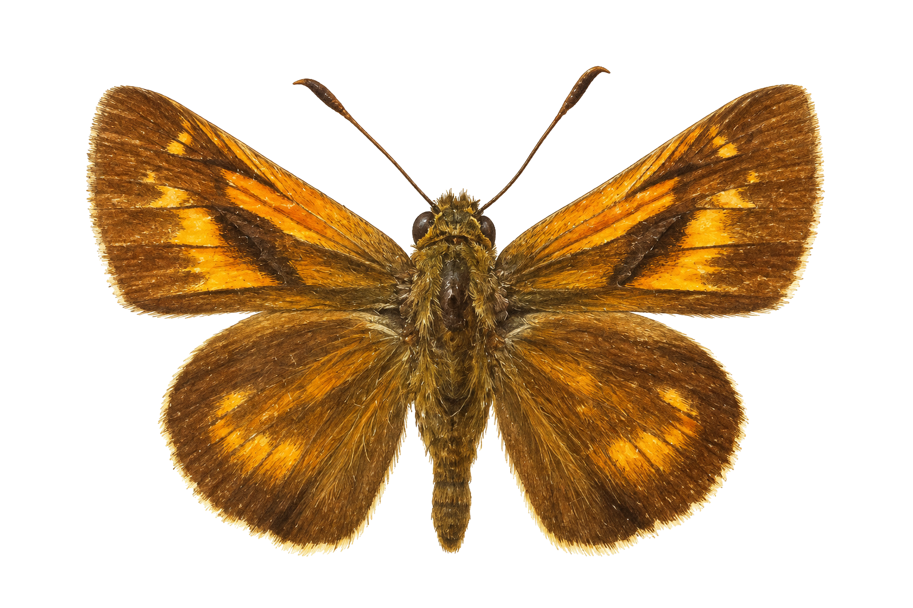

セセリチョウ科 · 154 / 165
アサヒナキマダラセセリ
Ochlodes asahinai

特徴・見分け方
褐色の地に黄橙色の斑紋がある。敏速に飛ぶが、花で吸蜜する姿が観察される。
雌雄の違い
雄の前翅表には黒い線状の性標がある。
大きさ
前翅長約19～23mm。
沖縄の島別記録
主な生息地は石垣島と西表島。地域図鑑には波照間島の採集記録も掲載。
生息環境
山地の林縁や、食草のリュウキュウチクのある場所。
生態・識別上の補足
資料によってOchlodes asahinaiと、近縁種の亜種としての扱いがある。ここでは地域図鑑の学名を採用。
幼虫・食草
リュウキュウチク。
参照元・参考資料
- 日本の蝶：形態・雌雄差
資料内の参照日: 2026-11-10 - 沖縄蝶類生態図鑑：アサヒナキマダラセセリ
資料内の参照日: 2026-11-10 - ムシミル：アサヒナキマダラセセリ
資料内の参照日: 2026-11-10
掲載内容は提供データ（2026年11月10日更新）に基づきます。記録島は現在の定着や観察の容易さを保証しません。イラストは参考表現で、同定には実物の形態と参照資料を併せて確認してください。